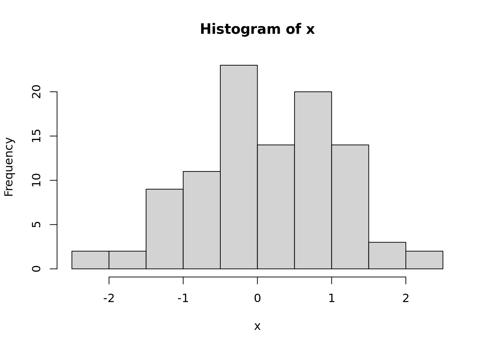
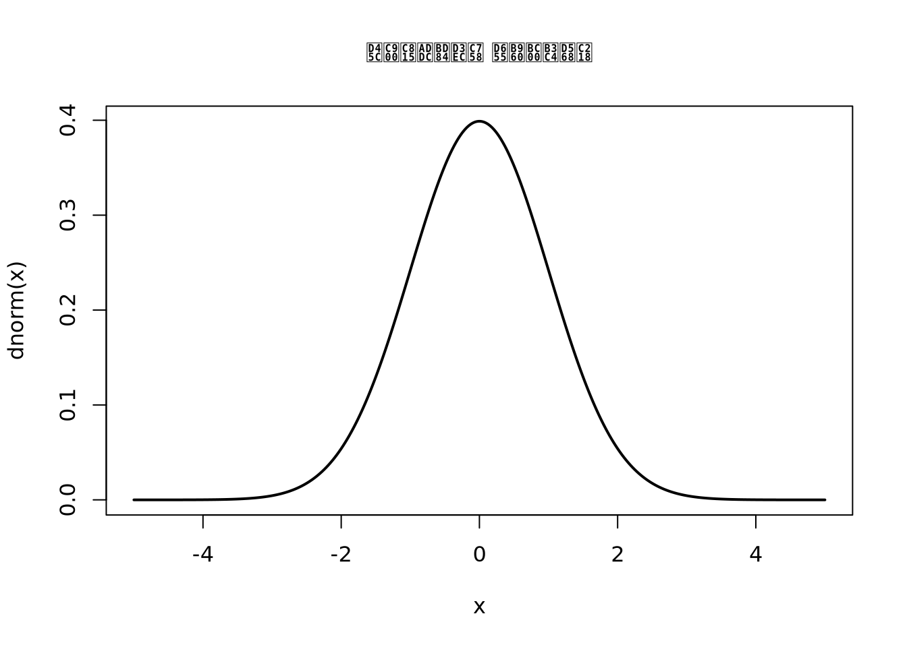
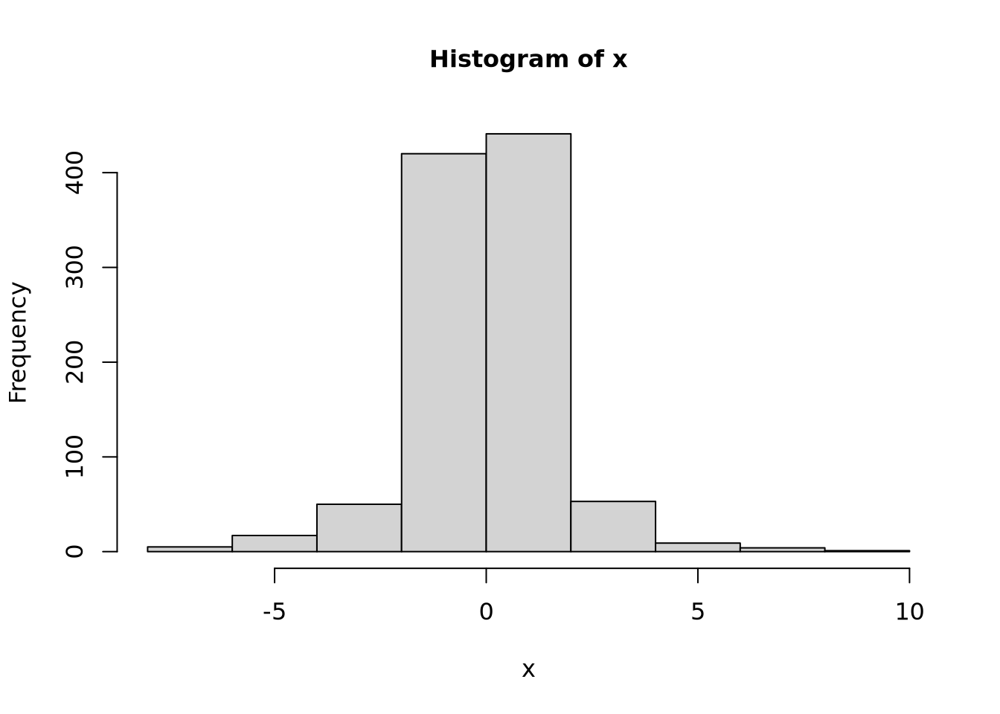
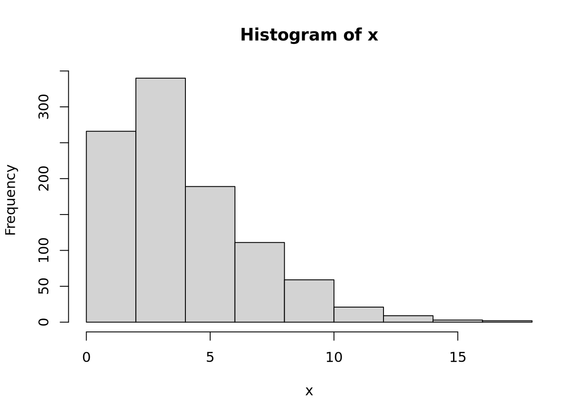
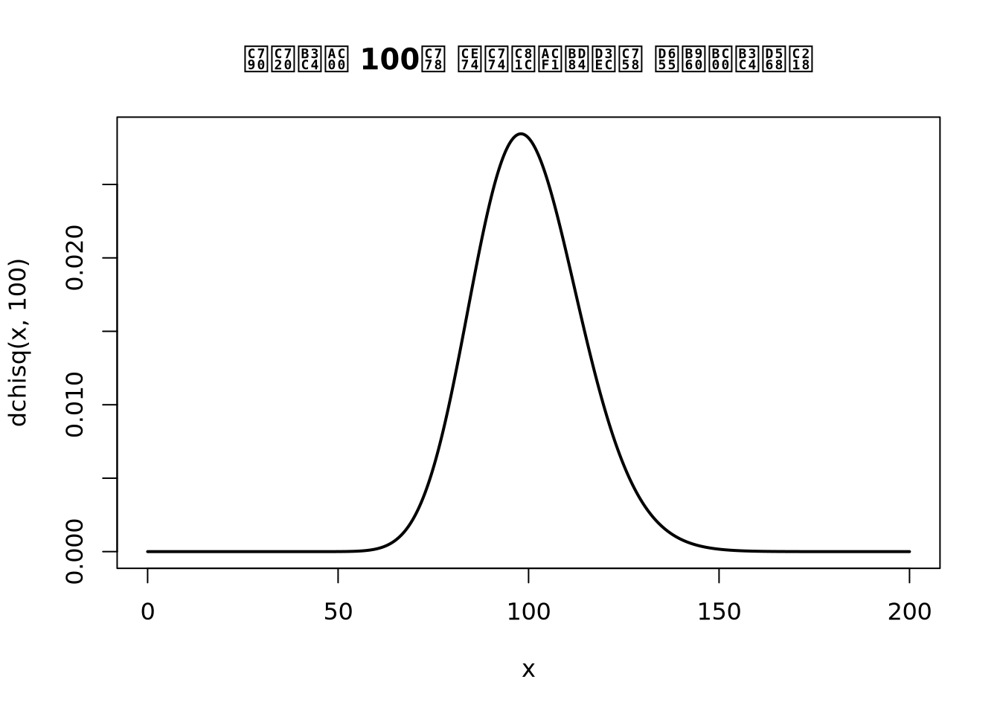

options(repr.plot.width = 15, repr.plot.height = 8) ## 플롯 크기 설정R Notebook
Ch02 기초적 통계이론
분포
정규분포
x <- rnorm(100) ## rnorm() / dnorm() / pnorm() / qnorm()
hist(x)
default는 표준정규분포이다.(n, mean = 0, sd = 1)
x <- seq(-5, 5, 0.01)
plot(x, dnorm(x), type = 'l', lwd = 2,
main = "표준정규분포의 확률밀도함수",
cex.main = 1, ## character expansion.main : title
cex.lab = 1) ## character expansion.lab : label
pnorm(q, mean, sd)| probability, cdf
print(pnorm(1.96))[1] 0.9750021print(pnorm(4, 3, 1))[1] 0.8413447print(pnorm(4, mean = 3, sd = 1))[1] 0.8413447p_value를 구할 수 없다면 백분위수(quantile value)를 구해야 한다.
print(qnorm(0.95))[1] 1.644854print(qnorm(0.975))[1] 1.959964print(qnorm(0.995))[1] 2.575829t분포
- 자유도가 중요한 분포이다. > 자유도 : t분포의 모양을 결정하는 것. parameter는 아니다. 그냥 아는 값.
표본의 분포가 아닌 표본 통계량의 분포에 해당한다.
x <- rt(1000, 3) ## 자유도가 3인 t분포에서의 샘플 1000개
hist(x, cex.main = 1, cex.lab = 1)
원리는 정규분포와 동일하다. rt(), pt(), dt(), qt()
- t분포의 확률밀도함수(probability Density function)
x <- seq(-5, 5, 0.01)
plot(x, dt(x, 3), type = 'l',
main = "t분포의 확률밀도함수")- 여러 개의 확률밀도함수를 같이 그려보자.
x <- seq(-5, 5, 0.01)
plot(x, dnorm(x), type = 'l', main = 't분포와 정규분포의 확률밀도함수' ## , lty = 1
)
lines(x, dt(x, 1), col = 'red', lty = 2)
lines(x, dt(x, 3), col = 'blue', lty = 3)
lines(x, dt(x, 30), col = 'green', lty = 4)
legend('topleft', c('N(0,1)', 't(1)', 't(3)', 't(30)'), ## query 문법처럼 사용가능한듯.
lty = 1:4, col = c('black', 'red', 'blue', 'green'))자유도 n이 커질 수록 표준정규분포의 확률밀도함수와 유사해진다.
\(T\) ~ \(t(df), ~~~ P(T≤t)\)
\(T_0\) ~ \(t(df), ~~~ t_a(df) : P(T > t_a(df)) = a\)
print(pt(2, 3)) ## probability distribution function[1] 0.930337print(qt(0.95, 3)) ## quantile[1] 2.353363print(dt(0, 3)) ## probability density function[1] 0.3675526- 우측검정 시, 오른쪽 영역의 확률을 알고 싶을 경우
Student T distribution practice
pt(1,3, lower.tail = FALSE) ## 낮은 값의 꼬리쪽으로 산출?[1] 0.1955011qt(0.05, 3, lower.tail = FALSE) ## 오른쪽에서의 a = 0.05인 quantile 값[1] 2.353363qt(0.95, 3)[1] 2.353363카이제곱분포(chi square)
x <- rchisq(1000, 4)
hist(x)
\(x > 0\) 에서의 오른쪽으로 치우쳐진 분포가 나온다.
x <- seq(0, 20, 0.01)
plot(x, dchisq(x, 5), type = 'l', lwd = 2,
main = '자유도가 5인 카이제곱분포의 확률밀도함수',
cex.main = 1, cex.lab = 1)x <- seq(0, 200, 0.01)
plot(x, dchisq(x, 100), type = 'l', lwd = 2,
main = '자유도가 100인 카이제곱분포의 확률밀도함수')
자유도가 높을 수록 정규분포와 비슷한 모양을 띈다.
- 이외 코드는 위와 유사하다…(t분포)
pchisq(100, 100)[1] 0.5188083qchisq(0.95, 100)[1] 124.3421dchisq(50, 50)[1] 0.03976148F분포
x <- rf(1000, 4, 6) ## n=100, 분자의 자유도(df1) = 4, 분모의 자유도(df2) = 6
hist(x, breaks = 50)x <- seq(0, 15, 0.01)
plot(x, df(x, 4, 6), type = 'l', lwd = 2,
main = "F분포의 확률밀도함수")
lines(x, df(x, 6, 4), col = 'red')
legend("topright", c("F(4,6)", "F(6,4)"), lty = 1:2, col = c('black', 'red'))- 활용 방법은 비슷하다.
qf(0.95, 4, 6)[1] 4.533677신뢰구간
- 예제) 비누공장데이터 : 9.0, 9.1, 8.8, 9.1, 9.0, 9.4, 9.2, 8.8, 8.6 (n=9)
x <- c(9.0, 9.1, 8.8, 9.1, 9.0, 9.4, 9.2, 8.8, 8.6)
bar_x = mean(x); bar_x[1] 9S_x = var(x); S_x[1] 0.0575s_x = sd(x); s_x[1] 0.2397916lower_x = bar_x - qt(0.975, 8)*s_x/sqrt(9) ## 자료의 수가 9이므로 자유도 8인 t분포
upper_x = bar_x + qt(0.975, 8)*s_x/sqrt(9)
c(lower_x, upper_x)[1] 8.81568 9.1843295% 신뢰구간이다.
quantile 값이 0.975면 우측 확률이 0.025인 t_a와 같으니까…
t.test()
ls(t.test(x)) [1] "alternative" "conf.int" "data.name" "estimate" "method"
[6] "null.value" "p.value" "parameter" "statistic" "stderr" t.test(x)$conf.int ## 해당 모듈의 하위 모듈인 conf.int : 신뢰구간 산출[1] 8.81568 9.18432
attr(,"conf.level")
[1] 0.95t.test(x, conf.level = 0.99)$conf.int ## 99% 신뢰구간, 디폴트는 95%[1] 8.731802 9.268198
attr(,"conf.level")
[1] 0.99가설검정
모분산 알고있음
- 예제) 공정온도에서의 제품의 강도(\(N(73.7, 1)\))
두 가지 방법 : \(p-value\)와 \(\alpha\)값 비교, 기각역과 관측값 비교
- 가설 : \(H_0 : \mu = 73.7 ~ vs. ~ H_1 :\mu > 73.7\)
\(\bar{x} = 75.1, ~ n = 16, ~ \alpha = 0.05\)
mu <- 73.7; xbar <- 75.1; sigma <- 1; n <- 16- 검정통계량의 관측값 : \(z_0 = \frac{\bar{x} - \mu_0}{\frac{\sigma}{n}}\)
z_0 <- (xbar - mu)/(sigma/sqrt(n)); z_0[1] 5.6- 기각역
qnorm(0.95)[1] 1.644854기각역보다 검정통계량의 관측값이 휠씬 크므로 귀무가설 기각 가능
모분산 모름
- 예제 2
mu <- 2; x_bar <- 1.96; s <- 0.05; n <- 50t_0 <- (x_bar - mu)/(s/sqrt(50)); t_0[1] -5.656854기각역
-qt(0.95, n - 1)[1] -1.676551유의확률(p-value)
pt(t_0, n-1)[1] 3.93525e-07실제 데이터가 있을 때 검증하는 방법
- 예제) 일전의 비누공장 데이터, 모분산은 알리가 없음.
- 가설 : \(H_0 : \mu = 9.2 ~ vs. ~ H_1 : \mu ≠ 9.2\)
x <- c(9.0, 9.1, 8.8, 9.1, 9.0, 9.4, 9.2, 8.8, 8.6)
xbar = mean(x)
S_x = var(x) ## r은 데이터 분석 툴이기 때문에 기본적으로 n-1로 나누어준다.
s_x = sd(x)유의수준 \(\alpha = 0.05\)
검정통계량의 관측값 : \(t_0 = \frac{}{}, \alpha = 0.05\)
t_0 <- (xbar - 9.2)/(s_x/sqrt(9)); t_0[1] -2.502173- 기각역
qt(0.975, 9-1)[1] 2.306004- 유의확률(p-balue)
pt(t_0, 8) + pt(-t_0, 8, lower.tail = FALSE)[1] 0.03681717- t.test()
t.test(x)
One Sample t-test
data: x
t = 112.6, df = 8, p-value = 4.325e-14
alternative hypothesis: true mean is not equal to 0
95 percent confidence interval:
8.81568 9.18432
sample estimates:
mean of x
9 default는 \(\mu = 0\)이기 때문에 귀무가설을 입력해줘햐 한다.
6.1
t.test(x, mu = 9.2, conf.level = 0.95, alternative = 'two.sided')
One Sample t-test
data: x
t = -2.5022, df = 8, p-value = 0.03682
alternative hypothesis: true mean is not equal to 9.2
95 percent confidence interval:
8.81568 9.18432
sample estimates:
mean of x
9 ## two.sided(de), less, greater